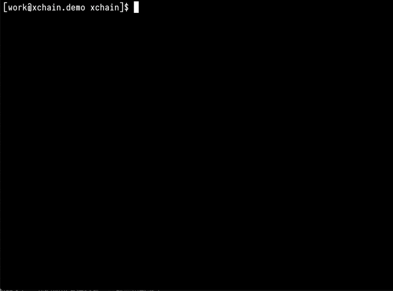

3. 创建合约¶
3.1. 编写合约¶
源码可以参考 xuperchain/core/contractsdk/go/example/math/math.go
主要实现struct中initialize，invoke和query三个方法来实现自己的逻辑
1 2 3 | func (m *math) Initialize(nci code.Context) code.Response { ... }
func (m *math) Invoke(nci code.Context) code.Response { ... }
func (m *math) Query(nci code.Context) code.Response { ... }
|
每个函数的入口参数均为 code.Context ，具体结构可参考 xuperchain/core/contractsdk/go/code/context.go 接口中定义了如何获取传入方法的参数，如何使用读写功能，以及如何在链上进行交易/区块的查询、转账或调用其他合约
1 2 3 4 5 6 7 8 9 10 11 12 13 14 15 16 | type Context interface {
Args() map[string][]byte
Caller() string
Initiator() string
AuthRequire() []string
PutObject(key []byte, value []byte) error
GetObject(key []byte) ([]byte, error)
DeleteObject(key []byte) error
NewIterator(start, limit []byte) Iterator
QueryTx(txid []byte) (*TxStatus, error)
QueryBlock(blockid []byte) (*Block, error)
Transfer(to string, amount *big.Int) error
Call(module, contract, method string, args map[string][]byte) (*Response, error)
}
|
对于C++版本的合约，可以参考代码 contractsdk/cpp/example/counter.cc 原理和Golang合约是一致的
注解
除了 Initialize 外的其他函数，是可以自行定义函数名的，可参考contractsdk/go/example/counter/counter.go中的具体实例，在之后调用合约时写明函数名即可
3.2. 部署wasm合约¶
编译合约 - Golang
注意合约编译环境与源码编译环境一致，编译参数如下
GOOS=js GOARCH=wasm go build XXX.go
编译合约 - C++
对于C++合约，已提供编译脚本，位于 contractsdk/cpp/build.sh，需要注意的是，脚本依赖从hub.baidubce.com拉取的docker镜像，请在编译前确认docker相关环境是可用的
部署wasm合约
将编译好的合约二进制文件（以counter为例）放到目录node/data/blockchain/${chain name}/wasm/下，这里我们默认的链名 ${chain name}=xuper
部署合约的操作需要由合约账号完成，部署操作同样需要支付手续费，操作前需要确保合约账号下有足够的余额
示例中我们的环境里创建了一条名为xuper的链，包含一个合约账号 XC1111111111111111@xuper
账号的acl查询如下：

为部署合约，我们需要事先准备一个符合权限的地址列表（示例中将其保存在 data/acl/addrs 文件），这里因为acl里只有一个AK，我们只需在文件中添加一行（如果acl中需要多个AK，那么编辑文件，每行填写一个即可）
echo "XC1111111111111111@xuper/dpzuVdosQrF2kmzumhVeFQZa1aYcdgFpN" > data/acl/addrs
然后我们按照以下命令来部署wasm合约counter
./xchain-cli wasm deploy --account XC1111111111111111@xuper --cname counter -m -a '{"creator": "someone"}' -A data/acl/addrs -o tx.output --keys data/keys --name xuper -H localhost:37101 counter此命令看起来很长，但是其中很多参数都有默认值，我们先来看一下参数的含义：
wasm deploy：此为部署wasm合约的命令参数，不做过多解释--account XC1111111111111111@xuper：此为部署wasm合约的账号（只有合约账号才能进行合约的部署）--cname counter：这里的counter是指部署后在链上的合约名字，可以自行命名（但有规则，长度在4～16字符）-m：意为多重签名的方式，目前版本的xchain部署wasm合约都需要以这种方式-a '{"creator": "someone"}'：此为传入合约的参数，供合约Initialize方法使用（此参数并非必须，只不过此处的counter合约需要传一个”creator”参数，参见contractsdk/cpp/example/counter.cc）-A data/acl/addrs：此即为需要收集签名的列表，默认路径为data/acl/addrs，如不是则需要显式传入（注意权重要满足acl要求）-o tx.output：此为输出的tx文件，可不传，默认文件名为tx.out--keys data/keys：此为部署发起者的密钥地址，可不传，默认值即为data/keys（部署发起者也要进行签名）--name xuper：此为区块链名称，默认为xuper，如果创建链名称不是xuper则需要显式传入-H localhost:37101：xchain服务的地址，默认是本机的37101端口，如不是则需要显式传入- 最后的counter是合约编译好的文件（编译完成默认是counter.wasm）
在此处，我们大部分参数取的是默认值，所以命令参数不必这么多了
./xchain-cli wasm deploy --account XC1111111111111111@xuper --cname counter -m -a '{"creator": "someone"}' counter运行效果如下

运行时会提示手续费的数目，使用 –fee 参数传入即可
然后收集所需AK的签名，因为示例中我们只有一个AK（同时也是发起者），所以只需要签名一次
./xchain-cli multisig sign --tx tx.out --output sign.out --keys data/keys
这里的
--output--keys参数也有默认值（输出到sign.out文件，密钥位于data/keys），可以不加。运行后我们即可获得此AK的签名运行效果如下

收集完发起者和acl需要的签名后，我们即可发送交易，完成合约部署了
./xchain-cli multisig send --tx tx.out sign.out sign.out
这里 multisig send 为发送多重签名的命令参数，
--tx是交易文件，后边的两个参数分别为发起者的签名和acl的签名（acl中有多个AK时，用逗号连接多个签名文件）。运行命令可得到交易上链后的id，我们也可以使用以下命令来查询部署结果./xchain-cli account contracts --account XC1111111111111111@xuper
会显示此合约账号部署过的所有合约
运行效果如下

3.3. 部署native合约¶
如果本地搭建超级链环境，在部署、调用native合约之前，请先查看`conf/xchain.yaml` 中native一节，确保native合约功能开启。
1 2 3 4 5 6 7 8 9 10 11 12 13 14 15 | # 管理native合约的配置
native:
enable: true
# docker相关配置
docker:
enable:false
# 合约运行的镜像名字
imageName: "docker.io/centos:7.5.1804"
# cpu核数限制，可以为小数
cpus: 1
# 内存大小限制
memory: "1G"
# 停止合约的等待秒数，超时强制杀死
stopTimeout: 3
|
编译合约 - Golang
编译native合约时，只要保持环境和编译XuperChain源码时一致即可，我们还是以contractsdk/go/example中的counter合约为例
cd contractsdk/go/example/counter go build # 产出二进制文件counter，用于合约部署
编译合约 - Java
编译Java sdk：Java版本不低于Java1.8版本
包管理器：maven，mvn版本3.6+
# 编译java sdk cd contractsdk/java mvn install -f pom.xml # 产出二进制文件target/java-contract-sdk-0.1.0.jar，并自动安装到mvn本地仓库下
编译native合约时，我们以contractsdk/java/example中的counter合约为例
cd contractsdk/java/example/counter mvn package -f pom.xml # 产出二进制文件target/counter-0.1.0-jar-with-dependencies.jar，用于合约部署
部署合约
部署native合约。针对不同语言实现的合约，主要通过
--runtime字段进行区分# 部署golang native合约 ./xchain-cli native deploy --account XC1111111111111111@xuper -a '{"creator":"XC1111111111111111@xuper"}' --fee 15587517 --runtime go counter --cname golangcounter # 部署结果 # contract response: ok # The gas you cousume is: 14311874 # The fee you pay is: 15587517 # Tx id: af0d46f6df2edba4d9d9d07e1db457e5267274b1c9fe0611bb994c0aa7931933 # 部署java native合约 ./xchain-cli native deploy --account XC1111111111111111@xuper --fee 15587517 --runtime java counter-0.1.0-jar-with-dependencies.jar --cname javacounter # 部署结果 # contract response: ok # The gas you cousume is: 14311876 # The fee you pay is: 15587517 # Tx id: 875d2c9129973a1c64811d7a5a55ca80743102abc30d19f012656fa52ee0f4f7
--runtime go：表示部署的是golang native合约--runtime java：表示部署的是java native合约
合约调用
调用native合约。针对不同语言实现的native合约，调用方式相同。通过合约名直接发起合约调用和查询
# 调用golang native合约，Increase方法，golangcounter为合约名 ./xchain-cli native invoke --method Increase -a '{"key":"test"}' golangcounter --fee 10 # 调用结果 # contract response: 1 # The gas you cousume is: 6 # The fee you pay is: 10 # Tx id: b387e2247780a5f5da1070a931b37c4fc7f1b68c072768053a43cffe36f2e0fb # 调用golang native合约，Get方法，golangcounter为合约名 ./xchain-cli native query --method Get -a '{"key":"test"}' golangcounter # 调用结果 # contract response: 1 # 调用java native合约，increase方法，javacounter为合约名 ./xchain-cli native invoke --method increase -a '{"key":"test"}' javacounter --fee 10 # 调用结果 # contract response: 1 # The gas you cousume is: 6 # The fee you pay is: 10 # Tx id: 4b46d9b1292481dcac3b504d5f8031e4eff44d8514c9508f121145cfa141d9db # 调用java native合约，get方法，javacounter为合约名 ./xchain-cli native query --method get -a '{"key":"test"}' javacounter # 调用结果 # contract response: 1146398290725d36631aa70f731bc3174e6484a9a
3.4. 设置合约方法的ACL¶
准备desc文件setMethodACL.desc
{ "module_name": "xkernel", "method_name": "SetMethodAcl", "args" : { "contract_name": "counter", "method_name": "increase", "acl": "{\"pm\": {\"rule\": 1,\"acceptValue\": 1.0},\"aksWeight\": {\"UU4kyZcQinAMsBSPRLUA34ebXrfZtB4Z8\": 1}}" } }
参数说明：
- module_name： 模块名称，用固定值xkernel
- method_name ：方法名称，用固定值SetMethodAcl
- contract_name：合约名称
- method_name：合约方法名称
- acl：合约方法的acl
设置合约方法ACL
设置合约方法ACL的操作，需符合合约账号的ACL，在3.2节，使用 XC1111111111111111@xuper 部署的counter合约，合约账号ACL里 只有1个AK，所以在data/acl/addrs中添加1行，如果合约账号ACL里有多个AK，则填写多行。
echo "XC1111111111111111@xuper/dpzuVdosQrF2kmzumhVeFQZa1aYcdgFpN" > data/acl/addrs
执行如下命令，设置ACL：
./xchain-cli multisig gen --desc ./setMethodACL.desc --fee 1 -H 127.0.0.1:37101 ./xchain-cli multisig sign --output sign.out ./xchain-cli multisig send sign.out sign.out -H 127.0.0.1:37101
查看合约方法ACL
[work@]$ deploy-env -> ./xchain-cli acl query --contract counter --method increase -H :37101 # 执行结果 # { # "pm": { # "rule": 1, # "acceptValue": 1 # }, # "aksWeight": { # "UU4kyZcQinAMsBSPRLUA34ebXrfZtB4Z8": 1 # } # }